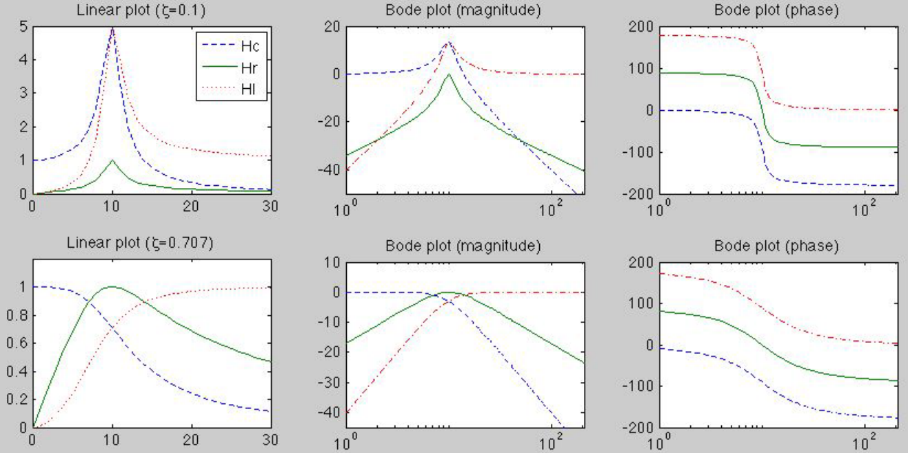
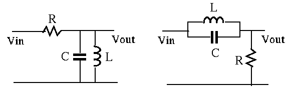

Consider a second order circuit of the series combination of R, C,
and L, connected to an input voltage source  . We can treat
any of the voltages
. We can treat
any of the voltages  ,
,  , and , across R, C,
and L, respectively as the output. The second order system can be
used as a band-pass (BP), high-pass (HP), or low-pass (LP) filter,
if the voltage across R, L, or C is treated as the output. In general,
the resonant frequency of a system is the frequency
at which the magnitude of its frequency response function is maximized.
In the following, we specifically consider the magnitude of the
frequency response function (FRF) of these filters. In particular,
we will consider
when
, and , across R, C,
and L, respectively as the output. The second order system can be
used as a band-pass (BP), high-pass (HP), or low-pass (LP) filter,
if the voltage across R, L, or C is treated as the output. In general,
the resonant frequency of a system is the frequency
at which the magnitude of its frequency response function is maximized.
In the following, we specifically consider the magnitude of the
frequency response function (FRF) of these filters. In particular,
we will consider
when  ,
,
,
,
 , and
.
, and
.
- 2nd-order Band-pas Filter:
If the voltage across  is treated as the output, we have
is treated as the output, we have
The FRF of the system is
|
 |
|
|
| |
|
|
(307) |
At the natural frequency
 , the imaginary
part of the denominator
is zero and
is the maximum, i.e., the resonant frequency is the
same as the natural frequency
. When
. In particular,
we have:
, the imaginary
part of the denominator
is zero and
is the maximum, i.e., the resonant frequency is the
same as the natural frequency
. When
. In particular,
we have:
This is a band-pass filter with the bandwidth defined as:
 |
(308) |
where
and
are the two
cut-off frequencies at which
In other words, the power of the output is halved when compared to
that of the input. The cut-off frequency is therefore also called the
half-power frequency. To find the bandwidth of this 2nd order
system, we rewrite the FRF as:
Note that
when the imaginary part of the
denominator is:
To solve this equation for the cut-off frequency, we multiply both sides
by
, and get two quadratic equations:
with four roots:
Ignoring the negative roots (with no physical meaning) we get
the two cut-off frequencies  and
and  :
and the bandwidth is
This happens to be the coefficient of the first order term in the
canonical form of the second order system, which can now be written as:
The equation
is of great importance as
it directly relates the bandwidth
and the natural
frequency
:
and the bandwidth is
This happens to be the coefficient of the first order term in the
canonical form of the second order system, which can now be written as:
The equation
is of great importance as
it directly relates the bandwidth
and the natural
frequency  .
.
The middle point between the two cut-off frequencies and
is
which is greater than the resonant frequency
,
and we have
.
If
(typically , i.e.,
),
we have
,
, and
 |
(319) |
- 2nd-order High-pass Filter:
If the voltage across  is treated as the output, we have
is treated as the output, we have
|
|
|
|
| |
|
|
(320) |
This is a high-pass filter as
To decide whether
 peaks and, if so, to find the resonant
frequency, we solve the following equation:
peaks and, if so, to find the resonant
frequency, we solve the following equation:
|
|
|
|
| |
|
|
(321) |
i.e., the numerator is zero, or
Solving this for  , we get the resonant frequency:
We also have
, we get the resonant frequency:
We also have
|
|
|
(324) |
Consider the following three cases:
- If
,
is real and
peaks at . In particular,
If
 is small,
. For example,
,
.
is small,
. For example,
,
.
- If
, we have
, and
i.e.,
 , or
,
is the cut-off frequency of the HP filter.
, or
,
is the cut-off frequency of the HP filter.
- If
 , is imaginary, indicating
there does not exist a frequency at which
peaks.
, is imaginary, indicating
there does not exist a frequency at which
peaks.
- 2nd-order Low-pass Filter:
If the voltage across  is treated as the output, we have
is treated as the output, we have
This is a low-pass filter as
To decide whether
peaks and, if so, to find the resonant
frequency, we solve the following equation, we find the frequency that
minimizes the magnitude of the denominator:
|
|
|
|
| |
|
|
(328) |
Solving for we get the resonant frequency of this system:
We also have
- If
, is real and
 has a maximum. In particular,
If is small,
. For example,
,
.
has a maximum. In particular,
If is small,
. For example,
,
.
- If
, we have
i.e.,
, or
,
is the cut-off frequency of the LP filter.
- If
, is imaginary, indicating
there does not exist a frequency at which
peaks.

At the natural frequency, the impedance of a series RCL circuit reaches
minimum, consequently the current reaches maximum and so does the voltage
across the resistor. However, the voltage across the inductor reaches
maximum at a frequency slightly higher than the natural frequency, and
the voltage across the capacitor reaches maximum at a frequency slightly
lower than the resonant frequency, as shown in the linear and log-scale
plots below. (For Bode plots, see
here.)

In summary,
- Low-pass filter:
- High-pass filter:
- Band-pass filter:
- Band-stop filter:
For a parallel RCL circuit with current input, due to the duality between
current and voltage, parallel and series configuration, the same derivation
of bandwidth can be carried out to obtain the same conclusions.
While the phenomenon of resonance can be destructive in mechanical systems
(for example, the famous story of the
Angers bridge),
and it therefore needs to be avoided, it can also be very useful in electrical
system such as in the tuning circuit in radio or TV broadcasting.
Example: Given the RLC circuits below, find what kind of filters they
are (HP, LP, BP, or BS).

The impedance of the parallel combination of and is:
At the resonant frequency
,
(open-circuit):
- The FRF of the first circuit is
When
,
, . In this case
no current goes through and the voltage drop across it is zero,
then the output voltage is the same as the input voltage. Otherwise
either
or
, is finite, the
voltage across is non-zero, the output voltage is reduced. This is
a band-pass filter:
- The FRF of the second circuit is
when
,
, . In this case,
the LC parallel branch is an open-circuit, the output voltage is
zero. Otherwise either
or
,
is finite, the voltage is non-zero. The circuit is a
band-stop or band-block filter:
 |
(342) |
Example: Find the bandwidth of each of the two filters above as
a function of , and . Determine whether the peak frequency
is lower or higher than the center of the passing/stop
band. Design a band-pass and a band-stop filter so that the peak
frequency is
and the bandwidth is
.
The bandwidth is defined as
, the
difference between the two cut-off frequencies
 and
and
 at which
at which
 . For both filters,
the cut-off frequencies can be found by solving
. For both filters,
the cut-off frequencies can be found by solving
i.e., the two filters always have the same bandwidth.
Solving these two quadratic equations and take the positive roots
of each, we get
The bandwidth is
The center of the bandwidth is greater than peak frequency:
Given the desired properties:
we further get
If we let , then we get
,
,
and